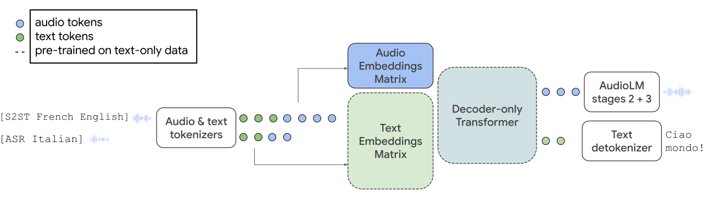

|paper|
Paul Rubenstein*, Chulayuth Asawaroengchai*, Duc Dung Nguyen*,
Ankur Bapna, Zalán Borsos, Félix de Chaumont Quitry, Peter Chen, Dalia El Badawy, Wei Han, Eugene Kharitonov,
Hannah Muckenhirn, Dirk Padfield, James Qin, Danny Rozenberg, Tara Sainath, Johan Schalkwyk, Matt Sharifi,
Michelle Tadmor Ramanovich, Marco Tagliasacchi, Alexandru Tudor, Mihajlo Velimirović, Damien Vincent,
Jiahui Yu, Yongqiang Wang, Vicky Zayats, Neil Zeghidour, Yu Zhang, Zhishuai Zhang, Lukas Zilka, Christian Frank
Abstract. We introduce AudioPaLM, a large language model for speech understanding and generation. AudioPaLM fuses text-based and speech-based language models, PaLM-2 [Anil et al., 2023] and AudioLM [Borsos et al., 2022], into a unified multimodal architecture that can process and generate text and speech with applications including speech recognition and speech-to-speech translation. AudioPaLM inherits the capability to preserve paralinguistic information such as speaker identity and intonation from AudioLM and the linguistic knowledge present only in text large language models such as PaLM-2. We demonstrate that initializing AudioPaLM with the weights of a text-only large language model improves speech processing, successfully leveraging the larger quantity of text training data used in pretraining to assist with the speech tasks. The resulting model significantly outperforms existing systems for speech translation tasks and has the ability to perform zero-shot speech-to-text translation for many languages for which input/target language combinations were not seen in training. AudioPaLM also demonstrates features of audio language models, such as transferring a voice across languages based on a short spoken prompt.

The AudioPaLM model, illustrated on speech-to-speech translation and automatic speech recognition. We take a pretrained text-only model (dashed lines) and expand its embeddings matrix to model a new set of audio tokens. The model architecture is otherwise unchanged; a mixed sequence of text and audio tokens is fed as input and the model decodes text or audio tokens. Audio tokens are converted back to raw audio with latter AudioLM stages.
In this section, we demonstrate AudioPaLM's ability to preserve the original speaker voice even in the translated audio. There are 3 groups of languages from CVSS-T dataset, as in Table 3 of Jia et al., 2022. For each language, we selected 5 utterances uniformly at random from the utterances which were sent for subjective ratings. The selection of the utterances for subjective evaluation is described in the AudioPaLM paper.
The columns are as follows:
| Original | CVSS-T (ground truth target) | AudioPaLM translation with English accent | AudioPaLM translation with the source-language accent | Translatotron 2 (prior work) |
|---|
| Original | CVSS-T (ground truth target) | AudioPaLM translation with English accent | AudioPaLM translation with the source-language accent | Translatotron 2 (prior work) |
|---|
Here we show English translation of the original audio, as translated by AudioPaLM. Note that usually there are multiple correct ways to translate a sentence, so a correct translation does not need to exactly match the targets from the CVSS-T dataset. The output of AudioPaLM currently does not have punctuation, because the training data did not have it. However, in our future work we plan to also add the punctuation.
| Source language audio | CVSS-T target language transcript | Audio PaLM translation |
|---|
| Source language audio | CVSS-T target language transcript | Audio PaLM translation |
|---|